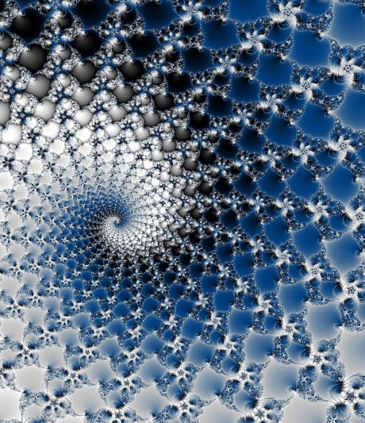

文学部
人間の生み出した文化もしくは人間そのものとしての在り方についての教育・研究を行う学部である。

人間の生み出した文化もしくは人間そのものとしての在り方についての教育・研究を行う学部である。
教育は技術者の養成を目標として行われることが多い。技術とともに技術者のあり方などに関しても研究されることが多い。

理学は自然の原理を追求する諸分野であり、別の言い方をするならば（自然の何かが）「どうなっているのか」を追求する諸分野である。
人体の構造や機能に関する知識を基礎として、病気の原因、その治療法・予防法などを研究する。
農業・林業・水産業・畜産業などに関わる、応用的な学問。
本来の芸術とは魔術や娯楽から分離されたもので、表現的で想像上の、ある種の言語である。
教育学の教育研究、または加えて教員養成を目的とする。
人間社会における物質的な生活資料の生産と交換とを支配する諸法則についての科学について。

最新の情報の提供にご協力ください。
» アップロードはこちら
» 提供された情報はこちら
本記事の内容はWikipediaから一部引用をしている